Archives : 2009-09
看图穿衣 @ Sep 30, 2009
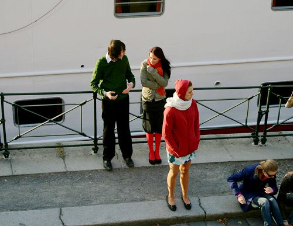
一早从光光那里看到这张在布拉格此时拍摄的照片，从衣服以及动作判断出气温不高。几天前她在德国的照片上穿着短袖手上拿着外套。真要谢谢她先行一步，让我等知道应该挑拣哪些衣服放进行李。10月中下旬的气温应该更低吧？
我到现在还没收拾行李，昨天中午错误地选择了两家小银行换汇没换到，今天中午继续。定了一个双肩背的摄影包，下面放镜头和相机，上面放自用品。究竟带哪些镜头仍然举棋不定，有时想就带一个去，有时又想如果带这个和那个或许更好。回想以前，一个傻瓜机一样行走天下，真所谓选择越多麻烦越多。
以及现在的心里慌张又浮躁，一颗心天天悬着，要睡很多天觉才能从这种状况中过滤出平静来。每天这样真是令人沮丧又绝望，得不偿失。
这样黑的夜。。。 @ Sep 30, 2009
拍摄于2009年9月19日
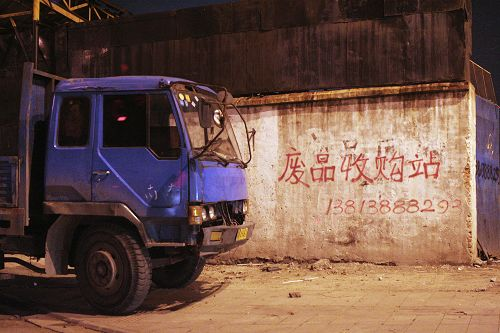

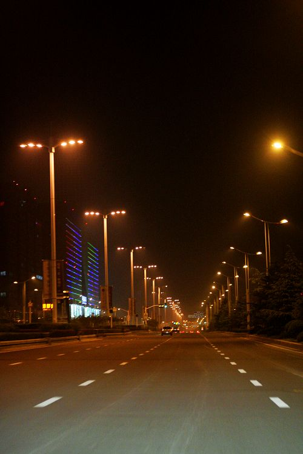
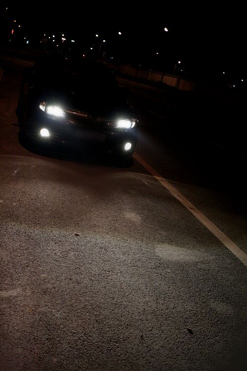
大众脸 @ Sep 28, 2009
话说晚餐敬酒，刚落地的老总兴奋地对我说：“在巴黎遇到你姐姐了。”
愕然。。。。。。“怎么会？”
“我们去餐馆就餐，见到一个中国女孩儿，觉得很眼熟，结果发现和你长得一模一样，连笑起来的酒窝都一样。”
无独有偶，一日本买手看到我对我同事说：“她和我们公司一个同事长得很象。”
我真是长了一张大众脸吗？
**黑裤子是近期尤其喜爱的，略带弹性的棉得配无痕内裤。说到无痕内裤，常常见到许多着紧身裤的女性，里面的内裤将臀部分割成几半，自己可能是舒服了，看的人煞是难堪。
**棕色棉麻衬衣昨晚第一次穿，配合在场的环保人士。因为和头发颜色很协调，与淡兰色挂件也融合，面料上的那些皱折喜欢得我今天也没舍得换下来。


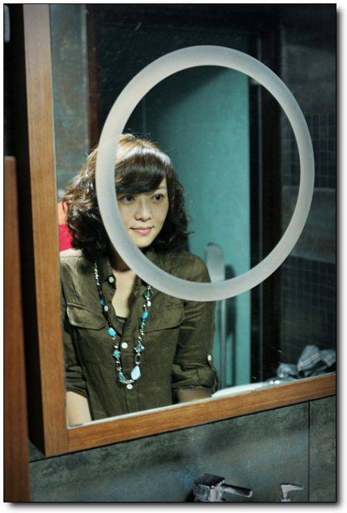
见面 @ Sep 28, 2009
昨有贵客到，众姐妹又有见面的机会。
这里省去快乐文字若干。。。。。。。
首先得赶紧吃午饭，接着又是饭局的今晚。
努力睁大惺忪双眼，坚持到放假。

弥补上回小肥洋拍摄的惨状，虽然在我拍摄时问问总是动来动去，还是抓拍到她的古典美，而旗旗美女为何眼神那么忧郁？让人不忍心上大头照呢~话说shuwua和maggie的茶经听得我们一楞一惊叹，知识渊博的人总会得到更多的喜爱。知道shuwua在，我特地换了环保的棉麻衬衣赴宴。喜欢和maggie领导没大没小的开玩笑，她从来没生气过，但听过她与shuwua的茶经，对她的喜爱又多了些敬佩，原来她有许多宝藏还没暴露出来呢~

问问带来的美味芝士蛋糕。

折#腾 @ Sep 26, 2009
10天后出发，琢磨着不能顶着政治工作者的头跑出去吧？！今天花了几小时整了一头卷出来。这个时候做任何变化都是有风险的，最坏的打算是如果不满意的话，就戴帽子度过旅程也没什么。
下午还真去MUJI买了两顶帽子，不是不满意发型而是要挡挡强光，一直说MUJI是劳保用品店，现在将劳保换成“环保”比较合适，以及购入放衣物的包包，可以将行李分类包装，省去左一个塑料袋又一个塑料袋的麻烦与不美观。
shuwua回来了，maggie准备组织大家打羽毛球，我问：“你是羽毛球皇后吗？”
maggie：“不是啊，我不打，光给你们拍照。”
我：“那组织我们跑步吧。你跟拍。”
。。。。。。
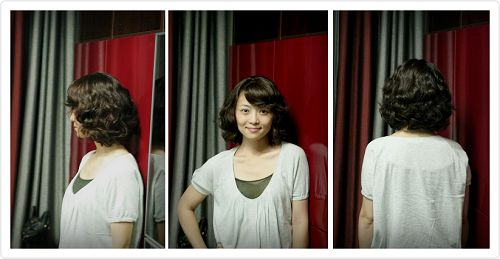
第一次吃宜芝多的抹茶豆腐是问问买的，今天自己买。


我们在一起。 @ Sep 25, 2009
Maggie组织大家吃饭，本着喝两杯放松放松的目的前往，依然背了相机去，在热气腾腾的小肥羊里海阔天空侃大山喝啤酒吃火锅，大口喝酒大口吃肉的感觉好不快活。Maggie带来一堆卡片，上面分别写有财富、友谊、成长、能力、创造力、安全感、智慧、责任、道德等等诸如此类的文字，然后我们每个人从中挑出自己最重视的5张卡片。主管通过这个测试了解一个员工的内心向往？还是别的什么意义？外企尽搞些稀奇的培训。如果说这生活还有什么令人愉悦的话，那一定是友谊，这也是我的5张卡片之一。友谊长于爱情的寿命以及在缘分到来时的相知，这是我最最珍惜的关系。如果没记错只有年纪最小的“旗旗”挑的5张卡片里有爱情，这说明女性成熟独立之后，对其他方面的追求更多于对爱情。
遗憾的是店里的光线实在没能体现出镜头的优势，我恨我恨我恨恨恨！（翻阅照片时，惊讶地发现“问问”的眉眼真有工笔画中古典美人的摸样。）那么，姐妹们，请给我补过的机会，让我在白天再拍一次你们！
说到女人，最近真是感到好女人很多，比如6号飞深圳有蔡蔡接送至港，第二天与Helen、H集中飞苏黎世，7天后要和H结伴在瑞士停留若干天。这些旅程中琐碎的事务都有她们操办，省了我不少心思和精力，而英伦少爷也将布拉格之行安排在我们到达期间。飙泪~
为什么这世界上的好女人越来越多，而好男人却越来越少呢？

白天纽约，黑夜巴黎。 @ Sep 24, 2009
【王文华／文】
我在赶些什么？
我耗尽青春用尽全力，拼命追求身外之物，结果我真的比别人有钱、有名吗？
更重要的，我真的因此而快乐吗？
远方有广阔的地平线，为何我还在原地摇过时的呼拉圈？
纽约和巴黎，代表了我人生的两个面向。纽约是白天，巴黎是黑夜。纽约是前半生，巴黎是下半场。
三十五岁之前，我认定纽约是世上最棒的城市。我在加州念研究所，毕业后迫不及待地去纽约工作。一做五年，快乐似神仙。我爱纽约的原因跟很多人一样：她是二十世纪以来世界文化的中心。丰富、方便。靠着地铁和出租车，你可以穿越时间，前后各跑数百年。人类最新和最旧、最好和最坏的东西，纽约都看得见。
所以在纽约时，我把握每分每秒去体会。白天，我在金融机构做事，一天十小时。晚上下了班，去 NYU 学电影，一坐四小时。在那二十多岁的年纪，忙碌是唯一有意义的生活方式。活着，就是要把自己榨干，把自己居住的城市，内外翻转过来。
这种想法并不是到纽约才有的。其实从小开始，台湾人就过着纽约生活。纽约生活，充满新教徒的打拚精神和资本主义的求胜意志。相信人要借着不断努力，克服万难、打败竞争。活着的目的，是更大、更多、更富裕、更有名。权力与财富，是纽约人的两个上帝。而能帮你走进天堂的鞋，就是事业、事业、事业。
在这种弱肉强食的生活方式，为了保持领先，每个人都在赶时间、抢资源。进了电梯，明明已经按了楼层的钮，那灯也亮了，偏偏还要再按几下，彷佛这样就可以快一点。出了公司，明明已经下班了，却还要不停讲手机，摇控每一个环节。在纽约，为达目的，可以不择手段，甚至赶尽杀绝。在纽约，没有坏人，只有失败者。
台湾，是不是也变成这样？
每一件事，都变成工作。上班当然是工作，下班后的应酬也是工作。有人谈恋爱是在工作，甚至到酒店喝酒、 KTV 狂欢，脸上都杀气腾腾，准备拚个你死我活。
我曾热烈拥抱这种生活，并着迷于这种因为烧烤成功而冒出的焦虑。这种焦虑让我坐在椅子边缘，以便迅速地跳起来闪躲明枪暗箭。这种警觉性让我练就了酒量和胆量、抗压性和厚脸皮。但也养成了偏执和倔强、优越感和势利眼。在纽约时我深信：能在这里活下来的，都是可敬的对手。黯然离开的，统统是输家。人生任何事，绝对要坚持到底。半途而废的，必定有隐疾。在这不睡的城市，每天我醒来，带着人定胜天的活力，跟着法兰克辛纳屈唱〈纽约 ? 纽约〉：“如果你能在纽约成功，你可以在任何地方成功！”是的，在纽约，现代的罗马竞技场，我要和别人，以及自己，比出高低。
这套想法，在我三十五岁以后，慢慢改变。
第一件动摇我想法的，是父亲的过世。
我父亲一生奉公守法、与人为善。毫无不良嗜好，身体健康地像城堡。七十二岁时，他得了癌症、引发中风，经历了所有的痛苦和羞辱。他一生辛勤工作、努力存钱、坚信现在的苦可以换得更好的明天。我们也相信一分耕耘、一分收获，用在纽约拚事业的精神照顾他。但两年的治疗兵败如山倒，最后他还是走了。父亲逝世的那天，我的价值系统崩溃了。我一路走来引以为傲的“纽约精神”，没想到这么脆弱。
不止在病床，也在职场。当我在企业越爬越高，才发现“资本主义”在职场中也未必灵验。上过班的都知道，很少公司真的是“开放市场、公平竞争”。大部分的同事都觉得你不是朋友、就是敌人。职场上伟大的，未必会成功。成功的，有时很渺小。很多人一辈子为公司鞠躬尽瘁，最后得到一支纪念笔。那些卷款潜逃的，反而变成传奇。
慢慢的，我体会到：世上有一种比“善有善报、恶有恶报”更高、更复杂的公平。人生有另一种比“功成名就”更幽微、更持久的乐趣。那是冲冲冲的美资本主义，所无法解释的。
我能在哪里找到那种公平和乐趣呢？
我想过西藏、不丹、非洲、纽西兰。然后，我注意到法国。
住纽约时，法国是嘲讽的对象。身为经济、科技、和军事强权的美国，谈起法国总是忍不住调侃一番。法国是没落的贵族，值得崇拜的人都已作古。法国人傲慢，高税率让每个人都很慵懒。动不动就罢工，连酒庄主人都要走上街头。
搬回台湾后，普罗旺斯、托斯卡尼突然流行。我看了法兰西斯. 梅思的《美丽的托斯卡尼》，其中一句话打动了我：“在加州，时间像呼拉圈。我扭个不停，却停在原地。在托斯卡尼，我可以在地中海的阳光下，提着一篮李子，逍遥地走一整天。”
是啊！我在赶些什么？我耗尽青春用尽全力，拼命追求身外之物，结果我真的比别人有钱、有名吗？更重要的，我真的因此而快乐吗？远方有广阔的地平线，为何我还在原地摇过时的呼拉圈？
当我重新学习法国，我发现法国和美国代表两种截然不同的生活方式。美国人追求人定胜天，凡事要逆流而上。法国人讲究和平共存，凡事顺势而为。纽约有很多一百层的摩天大楼，巴黎的房子都是三百年的古迹。纽约不断创新，巴黎永远有怀旧的气息。巴黎人在咖啡厅聊天，纽约人在咖啡厅用计算机。纽约有人潮，巴黎有味道。纽约有钞票，巴黎有蛋糕。
不论是政府或个人，法国人都把精神投注在食、衣、住、行等“身内之物”。就让美国去做老大哥吧。要征服太空、要打伊拉克、要调高利率、要发明新科技，都随他去。法国人甘愿偏安大西洋，抽烟、喝酒、看足球、搞时尚。当美国人忙出了胃溃疡，法国人又吃了一罐鹅肝酱。
讲到吃，法国有三百种起司、光是波尔多就有五十七个酒的产区。晚上六点朝咖啡厅门口一坐，一杯红酒就可以聊三个小时。九点再去吃晚餐，一直吃到隔天凌晨。他们在吃上所花的时间，跟我们上班时数一样。但讽刺的是：他们没有“All You Can Eat”。
吃很重要，但也要会挑时间，朋友介绍我去试一家法国餐厅，提醒我他们礼拜二、四晚上休息。“为什么？”我问。他说：“因为主厨要回家看足球。”
聪明的主厨懂法律。法国法律规定一周工作最多三十五小时，大部分的人一年有五周的假期。而美国人把加班当作自己有价值的表示，度假时还拿着手机回 E-mail 。法国人比美国人会玩。每年六月的巴黎音乐节，从午后到深夜，几百场露天音乐会在各处同时举行，人多到地铁都暂停收费。每年十月的“白夜”，平日入夜就打烊的店面，彻夜营业到清晨七点。每年夏天，巴黎市政府在塞纳河右岸布置了三段、总长一．八公里 的人工海滩。细砂、吊床、躺椅、棕榈树，自然海滩有的景致这里都有，让没有钱去海边度假的民众，也可以享受到海滩风光。
当然，法国这么深厚的文化，不可能只从吃喝玩乐而来。美国人读书，为了考证照。法国人读书，为了搞情调。每年十月的读书节，大城市的火车站内，民众轮流上台朗诵诗句。书店营业到天明，整晚有现场演奏的乐曲。“美食书展”选在铜臭味最重的证券交易所举办。小镇书展的书直接“长”在树上，读者必须爬到树上，把书摘下来品尝。 一直跟着美国走的台湾人，会心动吗？
我心动了。十一月我到巴黎，一位法国朋友来接待我。临走前我问他：“明天你要干嘛？”
“我要去银行。”
“然后呢？”我问。
“我不懂你的意思……”
对我来说，“去银行”是吃完午饭后跑去办的小事。对法国人来说，这是他一天全部的行程。法国人总是专心而缓慢的，每天把一件小事做好。
这样的生活，对美国或台湾人来说，实在是太颓废了。的确也是。法国失业率接近 10% ，高税率让雇主宁愿打烊休息，免得帮员工缴税。巴黎闹区纸醉金迷，但郊区的少数民族却没有工作机会。这些都是黑暗面，但对于每日被强光烤焦的台湾人，阴暗也许提供了喘息空间。生命的终点都一样，有钱人的丧礼只是比较多人上香。不断的追赶只是提前冲向谢幕，为什么不把时间花在慢慢为生命暖场？你不需要一辈子鞠躬尽瘁、死而后已。你可以偶尔伸伸懒腰、安步当车。 我从巴黎回来，台北并没有改变。关了两周的手机再度响起，一通电话找不到我的人会连续狂 call 十通。和朋友见面，他很关心地问我：“好了，你现在工作也辞了、欧洲也去了，接下来有什么 projects ？”
“Projects？”多么纽约的字眼。
我真想说：“好好生活，不就是人生最大的 project ？”但我知道在熙来攘往的台北街头，在不到四十岁的年纪，这样说太矫情了。况且，我今天之所以有钱有闲享受法式生活，不也正因为我曾在美式生活中得到很多利益？我仍热爱工作、热爱纽约，但已不用像二十岁时一样亦步亦趋、寸步不离。
所以我说：“我还是会早起，白天努力写作。但到了晚上，我想关掉手机。”
世界少了我，其实无所谓。但我少了我，还剩什么？
慌慌张张的生活 @ Sep 23, 2009
拍摄于9月19日

孟非说：“每天过的慌慌张张。。。”常看他主持的新闻，他那微斜的嘴角显得不可一世甚至有那么点儿匪气。认识他们台曾经的总监，是个幽默的主儿，讲话的范儿和电视上的孟非有几分相似，，长我两岁却已经做到省台领导，哼，也知道他评价当年的我讲话唰唰刷象小李飞刀。一次房产发布会上见到孟非，个头不算高大，着装精致，面相少了电视上的匪气多了一些柔和，对当时的我还是有吸引力的，不过也只瞧了一眼，第N眼也许。。。我觉得他吸引我的是用吊儿郎当的表情说着正经新闻，以及他表情中的那点儿匪气。
“每天过的慌慌张张”对这话特有共鸣，除了周末之外其他时间基本每天从早到晚是这样度过的，多年前的悠闲不知跑哪儿去了？这两天甚至感到崩溃，每天下班回家天色全黑，盯电脑久了两眼昏花，突然放松精神，意识游离，一下班就打哈欠，一个接一个的打到泪流满面。
繁忙状况下不小心控制情绪就会爆发，抓狂时讲话就跟吃枪子儿没两样。如果说女人一摸方向盘，淑女变泼妇。时不时处于工作的崩溃状态也可以让女人演绎现实版的河东狮吼，下班如果遇到塞车就恨自己没开辆铲车出来。我承认自己在忙碌的时候是个涵养不高的女人，有一天正当我没好气儿地说着电话，忽然听见同办公室男同事晴天霹雳一声大呵。。。有些工厂长的是猪脑袋，偏偏会问出“手机号码前要不要加025。。。”好吧，不忙的时候会好好答复你。
白天的状况让晚上尽做些有趣的梦，比如梦里有个光着腿、脚穿高跟鞋、手指细长、没有五官、童花头的女人拼命掐我脖子，一点点压迫气管，一次结束后又进行第二次，我的两只手感到麻木没有知觉，意识也渐渐昏死过去。我告诉梦里的自己你得醒过来你得挣扎，于是我在梦里挣扎，并清醒在现实中。发现自己的双手的确处于麻木状态，而自己仰面躺在床上。这种濒临死亡的感受和我十几岁掉入河中即将死亡的过程相似，河水中的我睁着眼睛，我还活着，但在河水中的所有感受却象在梦里。有意思的是无论在现实中还是在梦里我又活了过来。
现在我特别渴望的不是旅行，而是能坐着或躺着发一天呆。
Dress Blog @ Sep 22, 2009
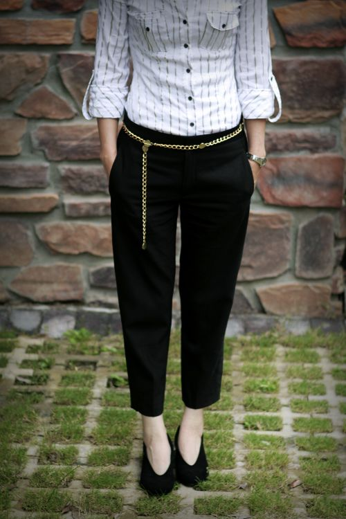

这是报纸吗？ @ Sep 21, 2009
周末傍晚外出叉饭前在报摊买杂志，摊子老板硬塞给我一份《东方卫报》。乘着菜没上桌，翻看起来。
阅毕，发短信给朋友缓解一下惊讶：60%广告，剩下40%中的20%为软文广告及整版的妇科讲座、整版的房产信息，除去抄袭网络图片和文字外仅有两三篇是记者写的，抄袭部分还是前一晚我看过的网络内容。挑战南京人民智商吗？
A回复：哎呀，互相引用及广告是普遍现象了。一般我会买申江服务导报和金陵晚报。
B回复：听说了他们的报纸抄袭，在这样的媒体工作蛮尴尬的吧。
C回复：广告部的人一定灌了不少黄汤，呵呵
D回复：你别当它是报纸，就不会惊讶了。
E回复：送的还要咋样，当拣狗屎的纸吧。
周末回父母家饭毕，翻看他们定购的快报和扬子，还算对得起我的时间和父母的钱。不知还有多少年轻人会订阅报纸？如果老年人擅长依靠网络获取信息与新闻，还会延续订购报纸的习惯吗？其实父母家的电视可以收看凤凰台，资讯已经相对真实丰富！看了一个多小时的凤凰台，里面正好介绍维也纳，凤凰台的女主持现在都走温柔路线了？！从父母家出来我只记得一句话：遇到麻烦找中国大使馆。对的，整个午饭父母都在唠叨“一个人出去多危险啊。。。外面很乱。。。看了凤凰台才知道。。。遇到麻烦赶紧找大使馆。。。走之前把家务写下来（存折放哪儿，密码多少）放信封里，我们不会看的。。。那么，我真的有那么霉吗？
爱死小小白 @ Sep 21, 2009
周末第一次使用佳能EF 70-200MM F/4L IS USM镜头，眼睛贴近取景框有点小眼花，用惯中焦段镜头拍近物，这款远摄变焦镜头最近对焦距离是1.2米，非常适合风光摄影，成像非常好，可以方便地截取其中一部分景色。那么只有那只最重也是我最不喜欢的摄影包可以放下三个镜头和一个机身，其余两个根本放不下。。。多么令人忧伤的旅程啊！
小小白： EF 70-200mm/4L USM
大白： EF 100-400mm/4.5-5.6L IS USM
小白： EF 70-200mm/2.8L USM
爱死小白： EF 70-200/2.8L IS USM
爱死小小白: EF 70-200mm f/4L IS USM

透过汽车前挡玻璃拍摄下的小朋友，刚刚吃过冰淇淋，面颊上还残留着巧克力的痕迹，表情十分顽皮可爱。

尤为喜欢深邃又悠长的小道，一位大叔从远处骑着山地车奔驰而来，年纪很大的大叔哦，钦佩这种健身的毅力。

陈道明代言的别墅区，房屋层层叠叠错落有致，只是从山上望过去色彩实在不敢恭维。

别墅里的楼王，2年前售价在2000万，不知道现在升值多少？是否已被售出？住在这样的房子里想低调都不行呢~周日空气的透明度再好些，如此远的距离用爱死小小白能拍的更清楚吧？

山间的小公路从远处奔跑过来的快乐，截图哦。

没想到我这么健壮！照片会将人的体重增加10斤，对吗？

野猫．家猫 @ Sep 20, 2009
周末安排的非常紧凑，不仅回家陪父母过了几个小时，还做了许多家务，外出叉饭，带家宠洗澡美容。。。最最愉悦的是拍了许多照片，定焦、广角、长焦以及24-70，多多尝试不同镜头的拍摄，练习练习，寻找它们的奇妙之处。傍晚拍到一群被好心人喂养的野猫，从很小很小养大，我还记得它们外婆和妈妈的摸样。悲哀的是它们的妈妈又怀孕了，并且它们不许它们的妈妈来好心人的院子里吃食。。。这五只小猫天天生活在好心人的院子附近，把那里当成自己的家。
这些小猫中我最青睐这对孪生子，它们的表情非常安静，因为白色皮毛又显得有些高贵。
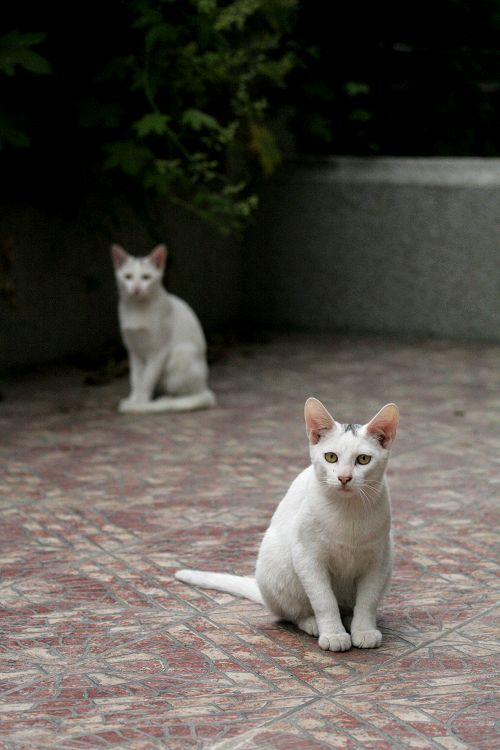
5只小猫中和外婆长得一模一样的小家伙，连惊恐警惕的眼神也有几分相似。猫外婆很早就不见踪影，但愿它还健康安全的生活在某个好心人的呵护下。
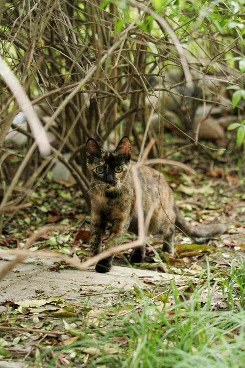
除了吃最享受的就是挠痒痒。

一个陌生人闯入它们的领地，胆小的狸花猫隔着水池观察我。

这只象汤圆吗？

早早集聚在好心人的院子里，隔着纱门朝里面张望。
终于，晚餐开始了。
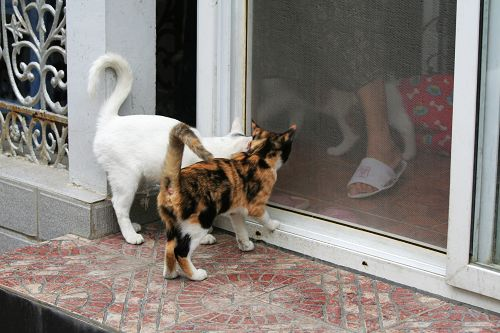
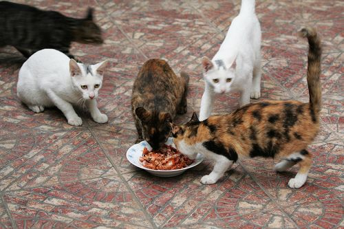
做过绝育手术的胖家猫只剩下“吃”的念想。它是一只很粘人的猫，危险情况下挺身而出，比如遇见luke。虽然已被阉割，但仍然是个汉子。

发泄鸡 @ Sep 20, 2009
橡胶玩具裂了，周六在宠物店给它买了新玩具“发泄鸡”。
篮子里好些表情各异的发泄鸡，其中一只张着空心大嘴巴，挤压出的叫声和买回的这只不同，非常嘶哑的叫声。它爱护自己的玩具，总是在你欲走进它的玩具时迅速衔起，又或者听见玩具的叫声立刻从沉睡中惊醒并迅速寻找它的伙伴。它叼着这只鸡从车上下来，走进家门，真是很有意思的场景。
这个周末它过得很开心。
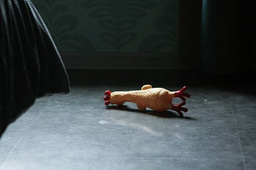
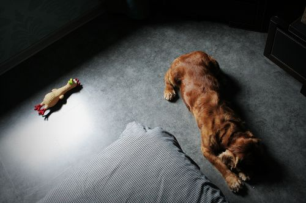

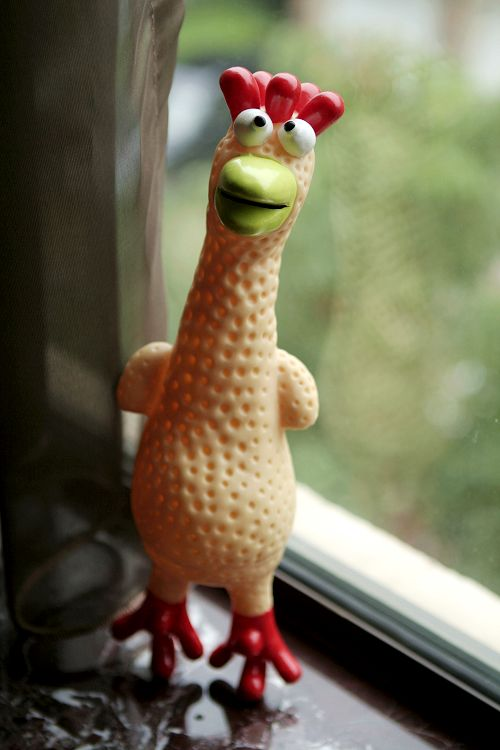
危险的忘性 @ Sep 18, 2009
晚上才发现中午的灶火没关，炒锅里的汤被炖得干。。。干。。。干。。。干。。。的，里面放着一把黑色汤勺。想着完了，汤勺肯定被烤化了，拿起来一看好好的。已经不是第一次忘关灶火，有一次还忘记关水龙头，自来水白白流了一个上午。。。以前忘关灶火，烧化锅里的塑料饭盒以及烧锅。这次的汤勺和炒锅质量很好，否则也会被扔掉。
有个MM的生日我总是忘，问过两三回，人家说：“你都问过几回了？再问我可真的生气了。”对呀，为什么我的忘性那么大呢？


这双鞋跟了我差不多5年，磨损的鞋带还在苟延残喘地坚守岗位，其他部件还算结实。考虑是不是穿这双短靴去旅行？

未能珍惜的年轻时光 @ Sep 16, 2009
----某友今天传来她写的文字。
if I could ...
By: Irina Todorova

说来也算是在法国公司工作，即使这个跨国公司和香水、时装、舞台没有任何的瓜葛，即使他们的主营业务总是和船舶、厂矿、油井、管道等等打交道，并会立即让人派生出油污、锈斑、荒漠等场景，然而，总情不自禁地希望自己能从舌尖喉底流动出一连串骇骇訇訇的法国音符。
于是我回想，我原来是可以说一点法语的呀……一点……虽然少，当然要比现在多。现在是“一丁点”---- 总结了一下，估计仅仅等同于一个只会以下英语的人：“Hello…how are you？…fine thank you, and you?...good…very good … what time is it？… it’s 10 o’clock…these are my my mum, dad, brother and sister…nice to meet you…what is it?... it is a book … I went to the chemist’s … breakfast …yummy… bye bye … see you later!” 连成一串看上去像两个无聊的人见面没话找话的寒暄。搜肠刮肚唯一有少许水准的是相当于 “would you like to dance with me tonight” 的一句,天晓得是从哪个电影里学来的，居然还清晰地记在我的脑子里。无奈的是，这句话几乎没有任何用武之地，比先前那些平淡废话还要惨。你能一见到人就笑嘻嘻地说“今晚和我跳个舞”么！就算熟人也不行啊 ---- 人家要纳闷啊，本来法语很蹩脚的，居然和我说这个…看来准备很久了，暗恋我？！…. 天！弄这么个名声！
继续回想。我原来是可以说一点法语的，因为在中学的时候有法语课，作为选修的第二外语，每周一节45分钟。偶尔有个作业然后学期末一个考试，仅此而已。中学的我是多么混混沌沌啊，对语言的兴趣远远没有现在来得强烈，远远没有意识到一门语言会开启色彩迥异的世界，即使意识到了也觉不出它的精彩。而且和我一样的人绝对不在少数，大家都戏谑地对待这样的选修课，用叛逆期少年的骄傲漠视老师，成为一种风潮。第一学期的女法语老师很喜欢我，估计我是她这门寒酸的选修课勉勉强强可以算得上所谓得意门生的几个之一。当时我对此不置可否，有一点可怜她，可又不好意思太叛逆，毕竟我表面上是个听话的学生。懒懒散散不知所谓地上完那个学期至今，我依稀记得的法语、对法语的模糊语感都是来自那短短几个月、加起来不足20个小时的课程。第二个学期换了一个经历过飞机失事留下伤疤、面对我们一群无知小儿面露悲愤的男老师，我们的漠视变本加厉，结果那个学期留在我脑海里的几乎连碎屑也很少了，尽管这个男老师的法语说得很好听。第二年，法语课没有了。
如果这个世界有后悔药，估计人人都会争而食之。
你我叹息时光流逝，但是真正在意的不是白发、皱纹、体力下降、精力不支。我们与其说叹息青春不在，不如说是痛恨自己的不争。青春年少时总是固执地骄纵地浪费着，对那些“过来人”的劝告嗤之以鼻。等自己成为“过来人”，惋惜从自己指尖流逝的时间和机会，想要用切身感悟劝说正在青春年少的浪费者，经历的又是一样的徒劳。
年轻是色盲一样的病症，让我们无视太多值得珍惜的。无奈，时光是唯一的药。好了，也迟了，周而复始。
水果晚餐 @ Sep 15, 2009
下班去麦德龙采购一批水果回家，喝完中午的骨头汤开始吃水果。这次买的越南火龙果果肉酸甜水分足，颠覆了以前绵绵的既没水分又无味道的印象，买了两，吃一个储备一个，够小农吧。
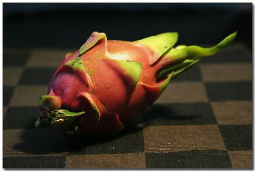
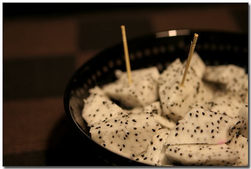
这些果子从左往右依次是沙枣、西梅和人参果。
边吃水果边看书，还要感叹一下这惬意的生活~爽歪歪~

做功课 @ Sep 15, 2009
陆续买了几本目的地的指导书，或许在网络上能寻到更丰富的信息，考虑到携带还是购买比较方便。仍然没有买到期望中有关瑞士的书，打电话告诉商家一旦某出版社的书上市第一时间通知我。昨日联系北京的H，询问她在瑞士期间的计划，哇，人家准备去瑞士乡下消磨几日，当地是德语和法语区，这个...这个...需要研究一下再作决定。可是两个人行走总好过一个人，好歹有人给你拍照啊！
咱拖沓惯了，可是这样的旅行还是要提前做足功课才会开心的在路上，每天睡觉前想想出发前准备的东西，穿什么鞋拎多大的箱子用哪个相机包带几个镜头以及当时的气温适合的着装......淡定...淡定...整个十月计算下来大约只有十来天工作，快活之后这一年的假基本全部用光，象少爷说的“假一度完感觉这一年也就完了”。
近期疲于奔波，我是那种胖瘦很明显的人，稍微累着就瘦，一旦悠闲下来就胖。买了筒子骨和着小蘑菇炖了汤，明天准备炖黄豆猪脚，后天......总之希望自己胖一些再胖一些，这样才有份量经得起旅行期间的消耗。
LUKE坐在旁边象一个雕塑，动都不动，傻了？

天微亮我睁开眼看到一只狗头在我面前，原来LUKE坐在床边，把头搁在床沿上看着我，吓死人了，这只呆狗！

现在的书真TNND贵，买书花了300多元，当然不止这三本，还没买到最想要的那本。
对布拉格的印象源于7年前两个朋友打算去那儿度蜜月，如今这两人一个去国外留学一个留在国内，东飞伯劳西飞燕。

周末烧烤 @ Sep 13, 2009
周末在头疼脑热中度过，感觉要生病了，却迟迟没有明显的症状。
一周前受邀此周末去某宅烧烤，所有食物原料从麦德龙购买，还有喜人的奶油和猪肉饼。带了LUKE去，希望它多参与社交，补偿平时没有更多时间带它玩耍，也希望它适应社交而不是每每躁动不安。
整个下午某宅主人感叹N次生活之美好。不得不说这样的下午的确美好，初秋的微风、斜阳、美味及众多好友，在房子的后院中边聊天边烧烤，多亏既勤劳又手艺非凡的“大厨”。这些美好就象一副画，可以让人心满意足的回归工作状态。
****************更多照片*****************
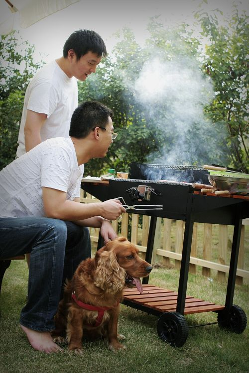
那时。 @ Sep 11, 2009
晚上翻以前的照片看，看到去年一月下大雪时候拍的，那组照片拍出来普遍偏红，忘记当时用的什么镜头，只是这几张当时为什么会被忽略了？主人和狗的表情，我们俩在一起的温暖，那时的TOBY很帅。
记得那天晚上在鹭鹭餐厅吃的晚饭，然后去酒吧看你打美式桌球，你在球桌上称霸后几个人联合起来给球手出主意如何打败你。遇到一个来中国出差的美国中年男人，对jiajialing称赞你的hot。深夜我们还去公共浴室洗了澡，浴室里面很大，各种洗浴方式都有，居然还有坐在小板凳上，前面象是梳妆台上的镜子，台面上放着洗浴用品。那是我们第一次在一块儿洗澡，还记得你的表情。。。洗完澡回去拍了这些照片，对吗？TOBY好象一夜未睡，围着一张床转来转去，我们把拖鞋放在床头柜上。第二天和jiajialing开了11个小时的车到南京，路上看到爆发户热衷的宝马车在雪地里无力地打滑，心里幸灾乐祸地说着“活该”。在镇江问路时，当地人说三天后到南京吧，那时我心里默默地坚定：今天我们一定要到南京。去年的大雪真是一场灾难，却有温暖留在这些照片中，让人回味。那时，你笑得很美。
呵呵~怀前一年的“旧”是不是也意味着衰老？
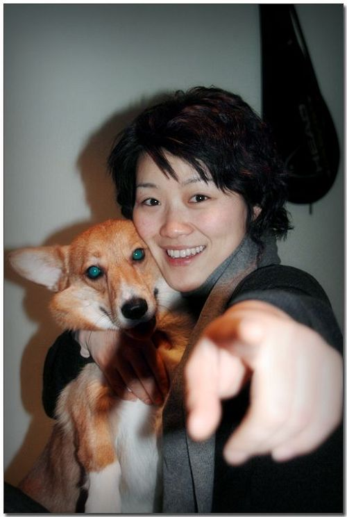


奔波 @ Sep 10, 2009
5点前起床，洗漱完一照镜子，哇噻！眼睛里好多红血丝！驾车往火车站赶，未过6点，隧道口挤了好些大大小小的车，那场景象商场狂购夜就等放人然后冲进去买个痛快一样一样的。清大八早地路上就没几辆车，不从隧道走会死啊？也好，你们等隧道，正好清场让我过。
9点到达上海，下了车直奔领馆拿签证，又是老长的队。。。如果去目的地可以象上下班那么短的路就好了，不过我连上下班的路都烦。这里要对横戈说抱歉，时间紧促当天来回，故不能共餐。这一天下来好疲惫，睡眠严重不足的情况下皮肤就象皱纹纸，浑身肌肉发酥，还带着相机准备无聊时自娱自乐。Angie：“带相机来也不说一声，我今天都没化妆。”如果抗着这老重的相机旅行是否会变革为“驴行”？真是难为我自己~
午饭后和Angie四仰八叉地躺在她公司会议室里，听她讲墙上的发财鱼，讲它们怎么从小长大，怎么从害怕人到不害怕人，怎么嬉戏打斗。。。慵懒地聊着各种话题，聊得我不想走了，转念想想她指着附近建筑这栋4万一平那栋5万一平的情形，估计所有移居上海的人资产会缩水1/3吧？还是回南京吧~
*********更多照片************


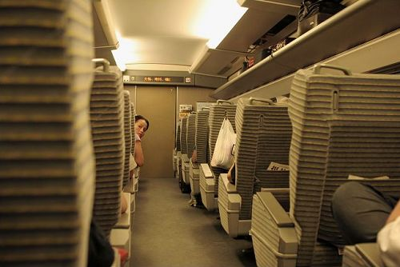
Angie：“哎，怎么后面清楚前面不清楚啊？”
。。。。。。反正就没把我拍清楚过。这个举例说明是给Helen看的，旅行期间请务必把我拍清楚，谢谢！
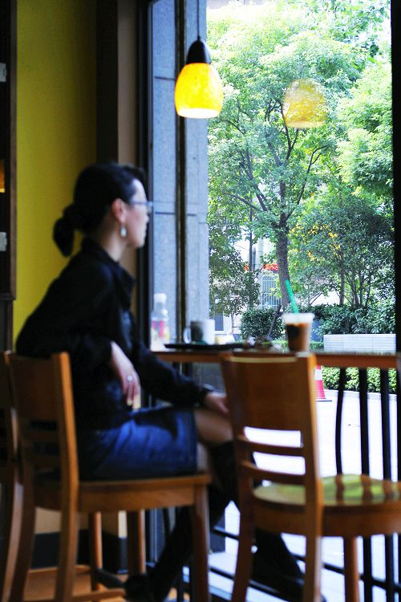
*秋涩* @ Sep 09, 2009
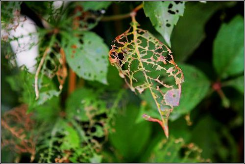
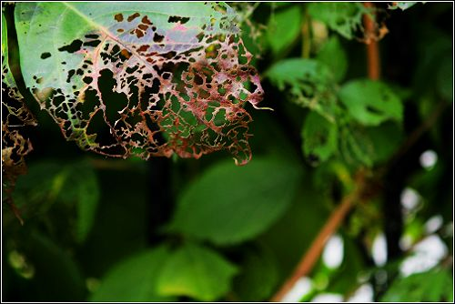
季节推着人往前走，绝不多给你考虑的时间。
有些事来不及在夏天得出结论，秋天就来了。
就这样度日，将快乐与不快乐分割，象秋天分割了夏与冬。
散步犹如历险 @ Sep 09, 2009
每每乘着10点后的夜色，才放心带LUKE出来散步。LUKE总是在开门的刹那迫不及待冲下去，等我。今天在我还没在楼下站稳脚跟，就听见不远处的一阵狗叫与乱战声。一只健壮又陌生的黑色拉布拉多。。。LUKE被JACK的爸爸牵着拎到我面前。
好些人家不喜欢养母犬，不喜欢母犬生理周期时的气味和污染。其实养公犬也未必容易，比如外出散步总带有侥幸心理，即使避开遛狗高峰也没准儿遇到今晚这样的意外情况。如果正好这只爱犬又是输狗不输志气的主儿，不是被个头大的欺负，就是赔钱带人家被咬伤的小狗看病。公犬散步最热衷于在路过之处画地图，以及用自己的气味盖住别的公犬画过的地图，乐此不疲。
以前鄙视父亲带着打狗棍带小小散步，如今家有公犬，才了解一根棍子的威慑力有多强大。


如厕的敏感 @ Sep 08, 2009
总经理办公室依然位于女厕斜对面，他可以端坐在办公桌前，只需稍稍抬起眼皮便可知道谁谁谁进出，时间的长短以及次数，只要他想知道。
今天我的鞋跟声音很小，小到默声，迈向女厕的脚步和心情会是怎样的轻盈。
如果某天鞋跟的声音象摆脱不了的跟踪器，那么每每进入女厕又是怎样的忐忑上下？
我只想悄悄地潜入，再偷偷地溜掉而已。
且不论谁谁谁进去之后可能。。。。。。。。。有可能发出噼里啪啦离奇的声响。。。可能真实再现美国甩片里如厕的音效。。。好吧，这真的是敏感女人的多虑，那个位置上的男人怎么可能会注意进进出出的人呢！他的听力也未必那么好吧？
下午，当我和小甲如厕完眉飞色舞地在女厕里边洗手边准备开口聊两句时，一个男人地声音从门外传来：“小甲，你去财务找一下小乙。”
。。。。。。
遇见它们 @ Sep 06, 2009
铁心桥附近的宠物集市，那里长年售卖狗狗及相关用品食品。进去看那些关在笼子里的狗狗，真想全部接回家养。好让它们离开那个令人心酸的地方。不忍心看它们的眼神~
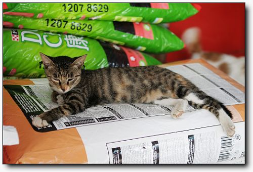


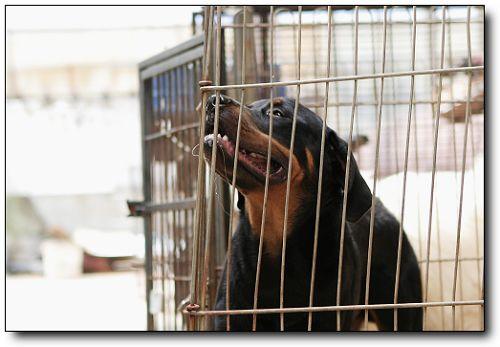

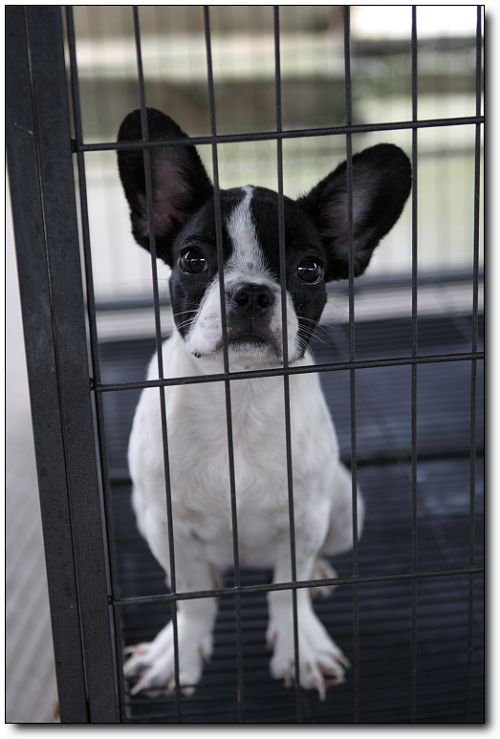
热爱泰迪贵宾的人们，去这里挑选吧，太多泰迪贵宾犬被繁殖出来。
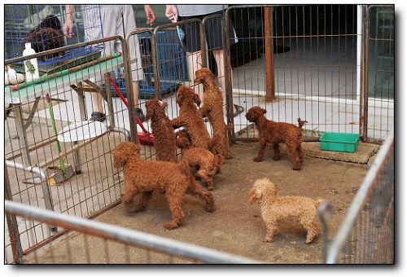
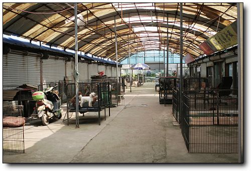
Divided By Night @ Sep 06, 2009
这一周是真正的社交周。
起初在问问家聚会，接下来迎送shuwua，周四迎来到南京开会的文心。不过每天晚饭后会看一部电影，这周印象深刻的是1965年法国6个导演拍摄的有关巴黎的短片，好老的镜头，但感觉片中呈现出的巴黎及巴黎人更真实。
昨天下午从1912的COSTA开始到创意集市、京采餐厅，晚饭后转战甘熙故居，凌晨一点多还在爱尔兰吧里聊啊聊啊，上帝也会佩服我们几个话佬的精力吧？就连上帝也不会拒绝可以让TA常常微笑的人啊！。。。中午起来看照片，黑眼袋非常吓人地显露在数码照片里，这一周本应遭受经前综合症的折磨，可是。。。可是就这么不知不觉地在友情的快乐中度过了。多希望我和我的朋友们，人生可以象这一周一样，常常被快乐围绕，与心不设防地友情相伴。
又是COSTA，总好过快餐口味浓重的STARBUCKS；

靠近1912的京采餐厅；

如今的“甘熙故居”又被打造成类似1912经营模式的吃喝玩乐之地，租金却便宜许多。CY问你可知道甘熙的意思？私人民宅而已，还有什么意思？
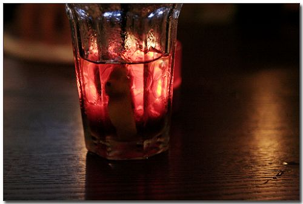
星期六1912的创意集市，转两圈才找到。只有“扑土”守摊，从内心到外在都热烈地与她握手，性格爽快的女孩子，我喜欢。文心挑选了“疯狂的赛车”和“云上的男人”，Sherry则喜欢那副“大果子镇”，摊位上未寻到。买下自己真心喜爱的作品先收藏着，等着日后升值~这些插画放在我家书架上无比相衬。
左一：WHERE IS MY HOMELAND？
对这副插画的情愫归结于自己对故乡模糊的概念，户口簿上是父亲出生成长的地方，护照上显示着我的出生地，而父亲的家乡我从来都不曾去过。童年的我在3个城市生活过，换了5所小学。。。这之后辗转反复，最终在南京停留。。。所以我对于HOMALAND毫无归属感，因为这种没有归属感的经历，第一眼看到问问创作的这副插画，端视许久，太多共鸣从胸中涌出。究竟故乡，于我，是在身边还是远方？
中间：趴在沙发上午睡的外外，夏天的风从窗外吹进来，拂起轻纱。这副插画除了外外之外，吸引我的是夏日午后的安宁意境。
右图：来自我看过的电影《The Visitor》。值得推荐的一部电影。

买来买去的困惑 @ Sep 03, 2009
一友韩国归来打算入手数码单反相机，于是向她推荐500D及自己的两只镜头。沟通到最后她问：“那你的350D呢？”这个。。。如果现在转手岂不是必须上新机身吗？那个无敌兔已经恢复到刚上市价位。为了给被我误解为全画幅的7D腾出价格空间，JS们卖的不是相机卖的是寂寞啊。。。我说我研究一下再答复你。
这次见过SHUWUA，以及她拍的许多好片，当她从环保包里掏出一个掌上相机，并告知其中某些照片为LEICA创作。。。那只老重的新镜头还没在我手里捂热，此状况出现多少让人有些震动。果真牛头狗头都不重要，重要的是相机后面的那个头？！可我已上了贼船，这过程总要经历了才能达到云淡风轻吧！？
SONY T300拍摄


初秋 @ Sep 03, 2009
放晴的中午赶紧端起相机去园子里试试新镜头，初秋的色彩已经单调地只剩下绿色和紫色。端着相机跟在LUKE后面，看着它活跃地钻草丛，四处画地图，感受着阳光里轻轻的凉意，说不出的酸涩。
听说父亲卖掉心爱的百灵鸟，只留下会说话的八哥。从我懂事起父亲就开始养百灵，每年的春天购进几只雏鸟，在它们成年后留下会唱歌的好苗子，其余转手卖掉。然后播放各种声音给它们听。百灵们跟着学唱，有时听见它们发出鸡的声音，或是喵喵喵的猫叫声，甭提多诧异了！百灵们的住所大得可以站进去一个少年，父亲为它们精心准备裹了鸡蛋的小米、白白胖胖地面包虫以及外面捉的蚂蚱。几十年如一日照顾着他喜爱的百灵鸟，如今他自己主动卖了它们，近日常常眼泪涟涟。想到这些喉头一阵紧缩，我父母都是太自觉的人，从来不愿给别人添麻烦，哪怕是自己的儿女，父亲这么做的确是因为自己年纪大了。
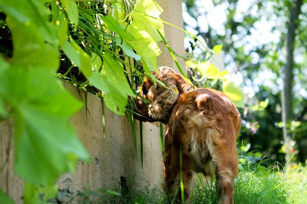
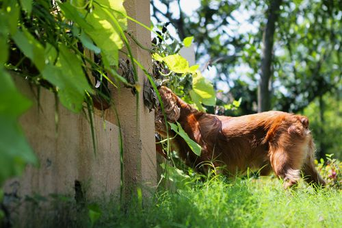
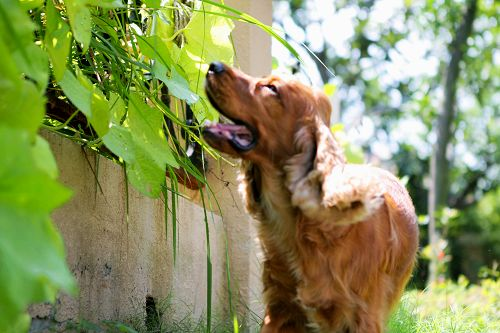
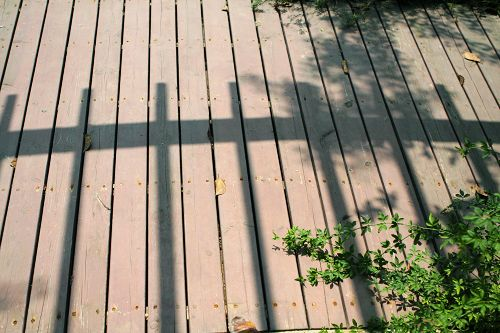


生活就象一只小马达。 @ Sep 02, 2009
这两天都没吃早饭，每每到了中午想尽花样用最快速度炒两好菜，然后吃得走不动路。从办公室到家完全没有糕点的踪影，皆因周末没去超市采购。生活就象一只小马达，得马不停蹄的奔忙，才不会有饿的时候。
午饭在水游城的土大力，与做慈善环保工作的shuwua，日系生活的问问以及能识别各种植物花卉且能用画笔勾勒出摸样的旗旗，一起吃的韩国菜。和女性朋友相处的快乐一点儿不压于恋爱的快乐，而我对人或物的爱憎是很原始的。
饭后逛MUJI。。。忽然意识到自己今天浑身上下没一件属环保范畴的物件。。。以前看MUJI是劳保用品的代名词，而她们改变了我对MUJI的看法，现在我会认为MUJI是一种生活方式的倡导与象征！
每个人的内心深藏着各种各样的细胞，不同交往对象会挖掘并壮大对应的那部分细胞，亦灿烂亦理智亦纯真亦质朴。而她们就象一个新大陆等着我去体会去学习，今天的好心情是上帝给我的恩赐，一起说说话喝喝茶，太开心了！可惜shuwua晚上回北京，欢迎不久再回南京相聚！

让我们拉拉高速吧！ @ Sep 01, 2009
车行驶到离家不远的地方，发动机故障灯依然亮着。停车打电话给4S店。不久救援车来了，电工带着电脑仪器，检测结果是：第二缸。。。失火。
这样解释吧，发动机6个缸同时工作，第二个缸喷火不畅，导致发动机故障灯亮起。就好象6个人抬一张桌子，其中一个人力量较弱的道理一样。汽油燃烧不充分导致第二缸喷嘴有积碳。要么拉拉高速，要么清洗喷嘴。奇怪，以前的车怎么没出现过这样的问题？
现在看来即使给你的车喂97号油，用美孚1号和按时保养，都无法避免积碳的产生，那么加97还是93只是锌烷值不同，与是否清洁没什么关系了？如果经常行驶在多尘空气中，常常低转速行驶，有积碳在所难免。也别吝啬地只在意油耗，车就是让人开的。
故障信号清除后，一脚踩下去4000转，好吧，让我们拉拉高速吧！